Proof of the work you did.
Daybook is a field record for people whose work has to be proved after the fact — contractors, property managers, inspectors, dentists, photographers.
Photograph what you did. Daybook attaches the time, the place, who took the shot and a fingerprint of the file itself, and keeps the original untouched. When the job is questioned six months later, you have a record instead of a memory.
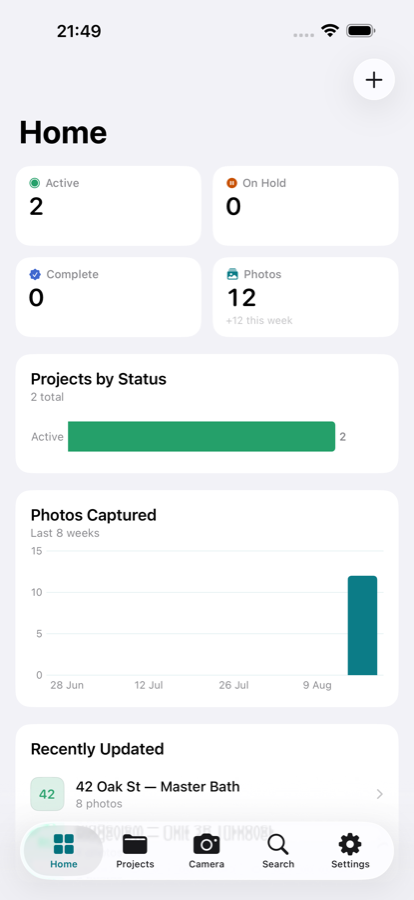
Every job at a glance
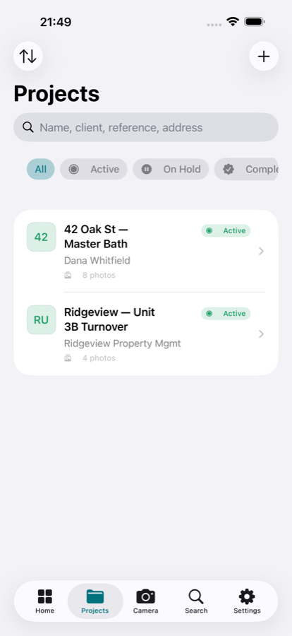
Jobs, filtered by state
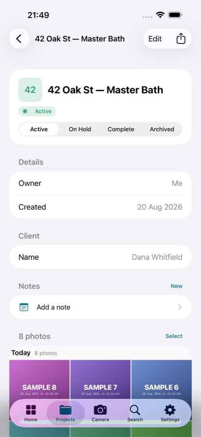
Photos grouped by day
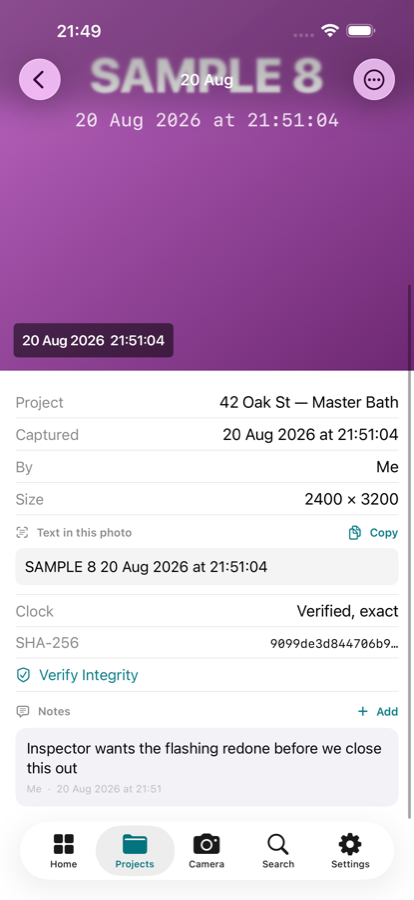
The record for one frame — and notes on it, signed and timed
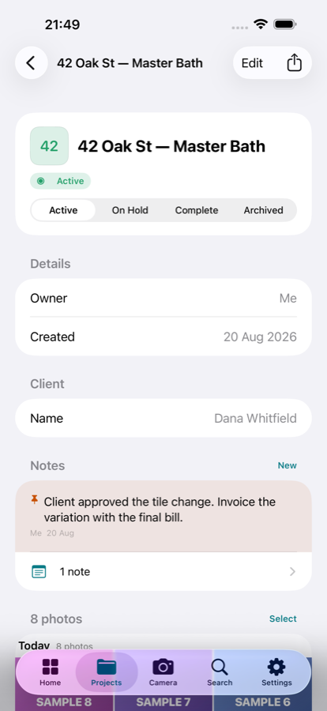
Notes about the job
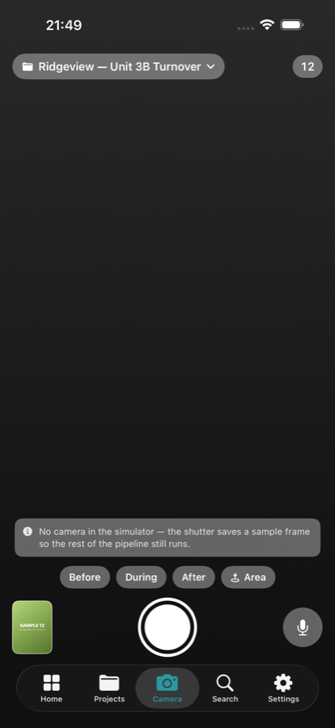
Shoot straight into a job
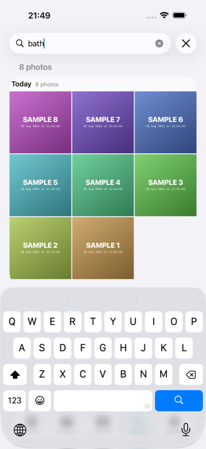
Search, including text inside photos
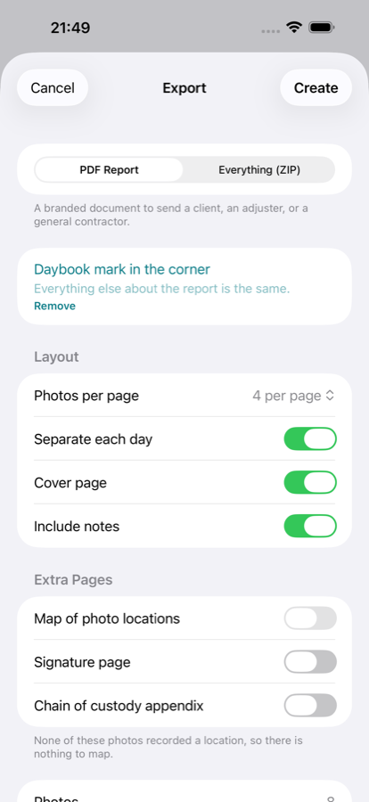
Build the report
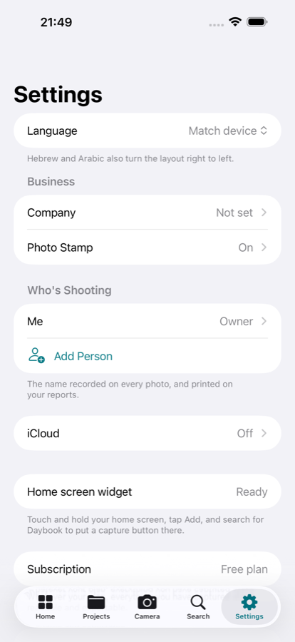
Five languages, your business details
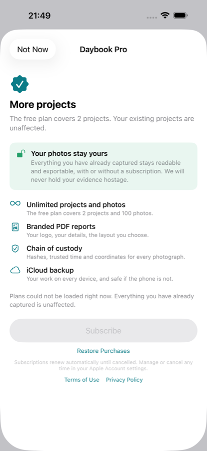
Daybook Pro
Export a PDF with a cover, your company name, the photographs laid out and numbered, a map of where each was taken, a chain-of-custody appendix listing every fingerprint, and a signature page. Or export a ZIP of every original with a manifest, readable without this app.
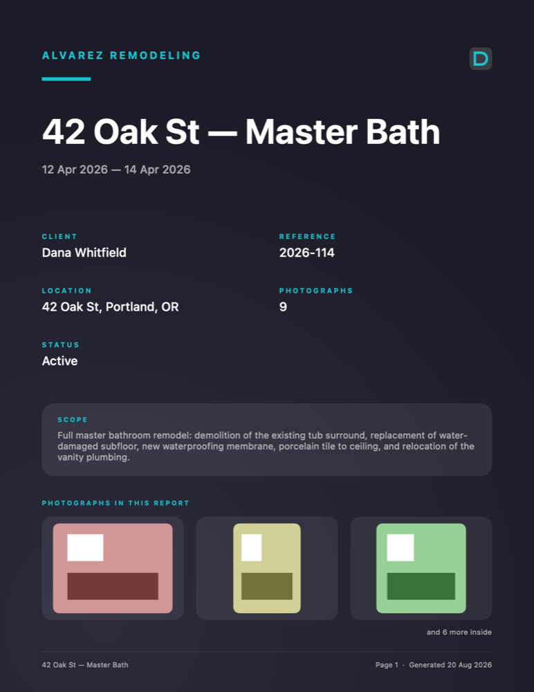
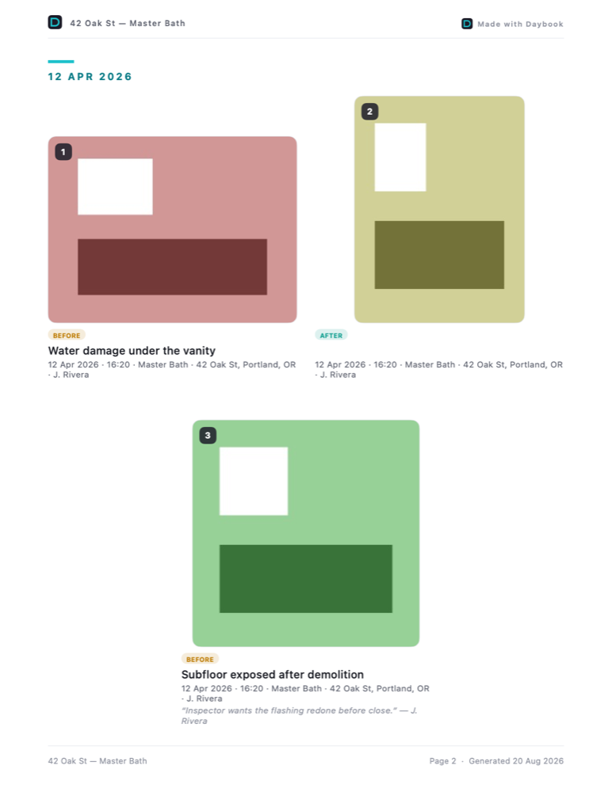
Read the full sample report (PDF)
There is no account and no server of ours. Everything lives on your device and, if you turn it on, in your own private iCloud.
Everything you capture stays readable and exportable on any plan, including after a subscription ends. We will never hold your evidence hostage.